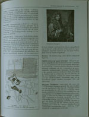
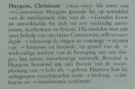
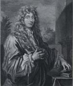
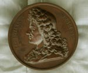
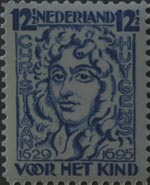
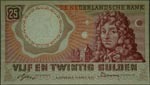
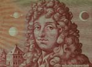
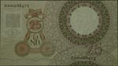

Christiaan Huygens. Facetten van een genie
De manuscripten
8 april 31 mei 2004
Tentoonstelling in de Universiteitsbibliotheek Leiden
0. Huygens geportretteerd in woord en beeld
Op de vraag ‘wie was Christiaan Huygens?’ mag een ingeburgerde Nederlander het antwoord niet schuldig blijven. Breng zo nodig ter plekke uw basiskennis op peil met het lemma ‘Huygens, Christiaan (1629-1695)’ uit Het cultureel woordenboek. Het portret van een van de weinige waarlijk grote genieën die deze natie heeft voortgebracht siert prijspenningen, postzegels en bankbiljetten.
|  | 0.1. Het cultureel woordenboek. Encyclopedie van de algemene ontwikkeling. Red. G.A. Kohnstamm en H.C. Cassee. Baarn 1992. [1180 A 8] |
|  | |
|  | 0.2. Christiaan Huygens, circa 56 jaar oud. Gravure door G. Edelinck (1640-1707). [Prentenkabinet, inv. 14444] |
|  | 0.3. Prijspenning van de Hollandsche Maatschappij der Wetenschappen
te Haarlem, ontworpen door J. Elion. Brons. [Prentenkabinet] –– Penning “welke om de vier jaren aan dien geleerde in goud wordt uitgereikt wiens onderzoekingen in de laatste twintig jaar de grootste vorderingen in een der exacte wetenschappen hebben doen maken”. In 1871 geschonken door de Hollandsche Maatschappij. |
|  | 0.4. Christiaan Huygens. Kinderpostzegel van 12½ cent (1928).
[privé-collectie] –– Uitgebracht als een van de vier weldadigheidszegels 1928 “Voor het kind”, met portretten van beroemde Nederlanders “die door hunne ontdekkingen der menscheid heil hebben gebracht”, aldus mr. M.A.M. Waszink, Minister van Onderwijs. |
|  | 0.5. Bankbiljet van ƒ 25,=. Ontworpen door J.F. Doeve (1955). [privé-collectie] –– Door de Nederlandse Bank uitgebracht in de biljettenserie ‘Erflaters’. De voorzijde bevat ygens’ portret met op de achtergrond het Voorburgse buitenhuis Hofwijck, zon, maan en de planeet-met-ring Saturnus; op de achterzijde onder meer de afbeelding van het slingeruurwerk. |
|  | |
|  |
| vorige pagina | volgende pagina |